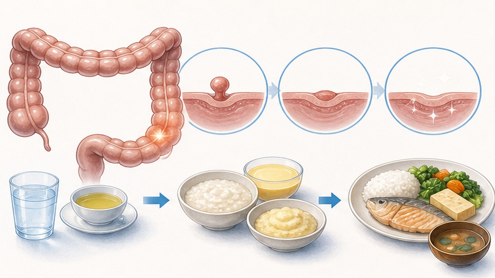
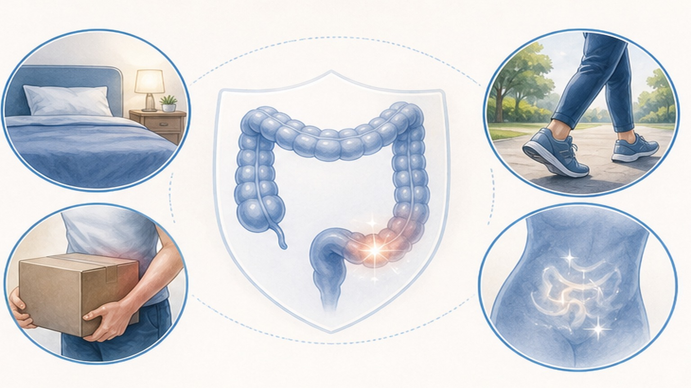
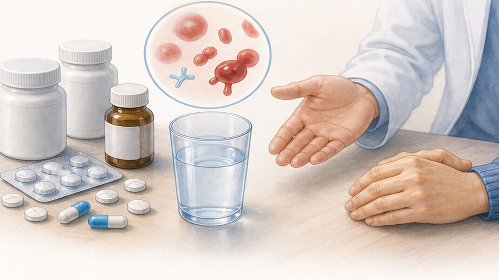
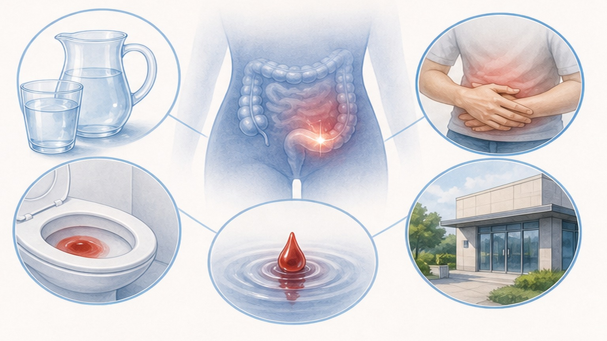

시술 뒤 2주까지는 스스로 살펴봐야 합니다 — 집에 왔다고 끝이 아닙니다
대장내시경 중에 올가미·집게·열로 용종을 잘라 냅니다

오래 굶는 것(3~5일 금식)보다 일찍 먹기 시작하는 것이 회복에 더 안전하다는 연구가 있습니다
씨앗·견과·잡곡·해조류를 1~2주 모두 끊을 근거는 부족합니다 — 핵심은 ‘처음 며칠 자극 피하기’
작은 용종은 정해진 제한 기간이 없습니다 — 큰 용종·소작·점막절제만 2주 조심합니다

피를 묽게 하는 약과 진통제는 의료진의 개별 안내를 따릅니다 — 무조건 1주 중단은 오히려 위험할 수 있습니다
| 약 | 어떻게 하나요 |
|---|---|
| 아스피린만 드시는 분 | 대부분 끊지 않고 그대로 드시거나 곧 다시 시작합니다. 스스로 끊으면 심장·뇌혈관 위험이 더 큽니다 |
| 와파린·먹는 항응고제·항혈소판제 | 피가 멎은 것을 확인하면 보통 24~48시간 안에 다시 시작을 고려합니다. 시작 날짜는 시술 의사의 안내대로 |
| 아플 때 먹는 진통제 | 아세트아미노펜(타이레놀)을 먼저. 이부프로펜·나프록센 같은 소염진통제는 출혈 위험이 있어 피합니다 |
| 혈압·당뇨·갑상선 약 | 시술과 상관없는 약은 평소대로. 시술 당일 아침 약은 미리 안내받은 대로 |

휴지에 묻는 적은 피는 지켜보고, 오른쪽 신호는 바로 119 또는 응급실입니다
| 살펴볼 것 | 가벼운 출혈 — 지켜보기(걱정되면 병원에 연락) | 위험한 출혈 — 바로 119 또는 응급실 |
|---|---|---|
| 피의 양 | 휴지에 살짝 묻는 정도, 변기 물은 맑음 | 변기 물이 붉어짐·검붉은 피·피덩어리 |
| 횟수 | 한두 번으로 그치고 더 나오지 않음 | 반복되거나 양이 점점 늘어남 |
| 색 | 선홍색이지만 양이 아주 적음 | 짜장면 같은 검은 변(위쪽 출혈일 수 있음) |
| 몸 상태 | 어지러움·식은땀·복통이 없음 | 어지러움·식은땀·쓰러질 것 같음·창백 |
| 맥박 · 혈압 | 평소 범위로 안정적 | 맥박이 빨라지고 혈압이 떨어짐 |
| 배 | 새로운 통증이 없음 | 새로 생긴 심한 복통·팽만·딱딱함 |
시술 뒤 합병증의 분명한 위험 신호입니다 — 한 가지라도 있으면 지체 없이 119

광교바른내과 추적 기준 — 용종 종류·크기·개수·뗀 방식에 따라 달라집니다
| 이번 결과 | 다음 검사 | 설명 |
|---|---|---|
| 용종 없음 | 5년 뒤 | 가족력이 있거나 증상이 달라지면 더 일찍 받을 수 있습니다 |
| 용종은 있으나 선종 아님 | 3~4년 뒤 | 과형성 용종처럼 암이 되지 않는 용종만 있었던 경우 |
| 선종 있음 | 2~3년 뒤 | 관상 선종처럼 흔한 양성 선종이 있었던 경우 |
| 고위험 선종 · 여러 개 | 1~2년 뒤 | 고도 이형성·융모 선종·10mm 이상 큰 병변·선종 5개 이상 |
| 2cm 이상을 나누어 뗀 경우 | 6개월 뒤 | 남은 조직이 없는지 짧은 간격으로 먼저 확인합니다 |
QR로 다시 보기 · 집에서 볼 용종절제술 후 주의사항과 대장용종 결과지 안내문을 드립니다